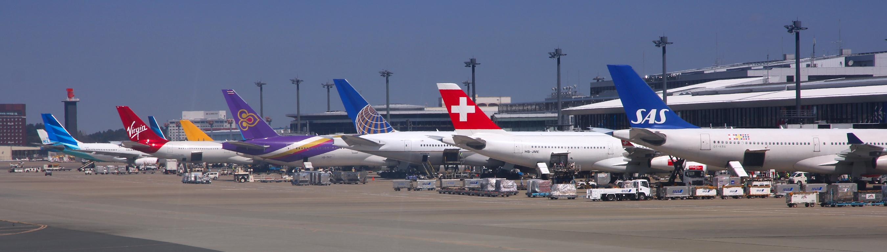
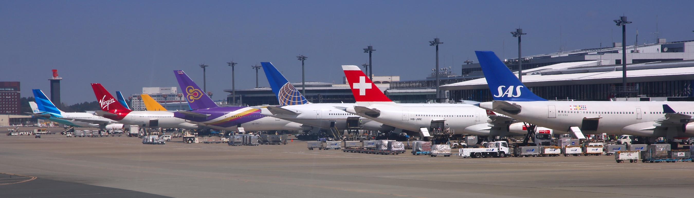

Currently the fastest way to travel is to travel by air. If you are most people you are likely to be flying on an airliner. Airliners are commercial aircraft that carry people and sometimes cargo in their fuselage, the main body of a plane. As of 2025 Airbus, a europeon aircraft manufacturer, is the worlds top airliner manufacturer and Boeing, Airbus's American rival, being the second best in the world. Both manufacturers have many accomplishments. A couple examples include Boeing manfacturering the most produced airliner in the world, and Airbus manufacturering the biggest airliner in the world. Airbus names most of their aircraft by putting A3 in front of a number. When the number gets bigger so does the aircraft that is assigned that number. Boeing names their aircrft by putting a number between two 7s. Unlike Airbus, the bigger the number it's assigned, dosen't nessasarily mean that the aircrft is bigger. Both manufactuers have amazing history. To read more on these amazing manufactuers click on the either Boeing or Airbus.
Now that we've talked about airliner manufacturers lets talk about planes. Boeing's well known airliners include the Boeing 707, 717, 727, 737, 747, 757, 767, 777, and the Boeing 787. You may notice when riding these planes that after the name of the plane there's a dash and then followed by one or 3 numbers. The fist number is the variant of that plane where the bigger the number the bigger the plane. Most of the time the fist number is followed by two zeros or nothing, but if you see random numbers behind the first they're the customer code of who bought the aircraft. Another thing that you might see after the name of the plane are the letters ER or LR. ER stands for extended range and LR stands for long range. Boeing's biggest commerical airliner is the 747, one of the most well known commercial planes. When the 747 was built in 1968 was the biggest airliner in the world as well as the first plane to be called a "Jumbo Jet" (Middle-left photo: 747) . Since 1968, Boeing has produced 1,574 747s. Airbus's main commercial jets include the A220, A300, A310, A320, A330, A340, A350, and the A380. The A380 is currently the worlds largest airliner and is the only full lenght double-decker plane. (Bottom-left photo: A380) Like Boeing, the name of the plane is followed by three numbers. Another similarity is that the fist number is the model of that plane. After the first number is where things change. The second number is the engine model and the final number stands for the amount of power the engine can produce. Click here to learn more about what these letters and numbers represent. At the back of all these planes is an APU(auxiliary power unit) which is used for electricity in case an airport doen't have a ground power unit. (Top: Wide body airliners at Narita Airport)